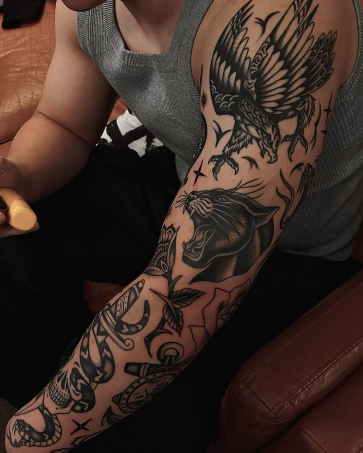
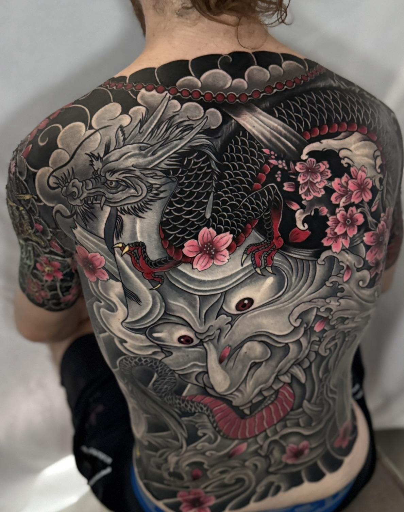
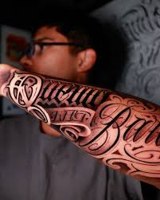
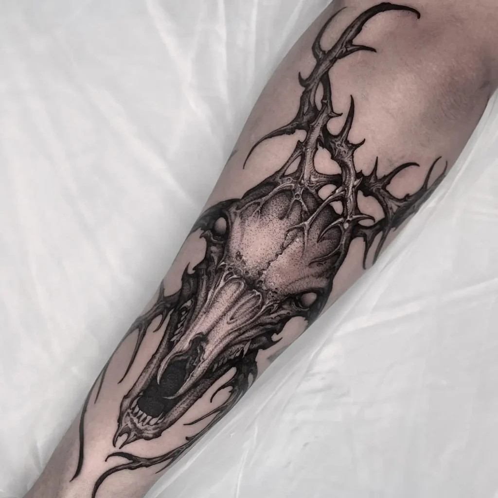
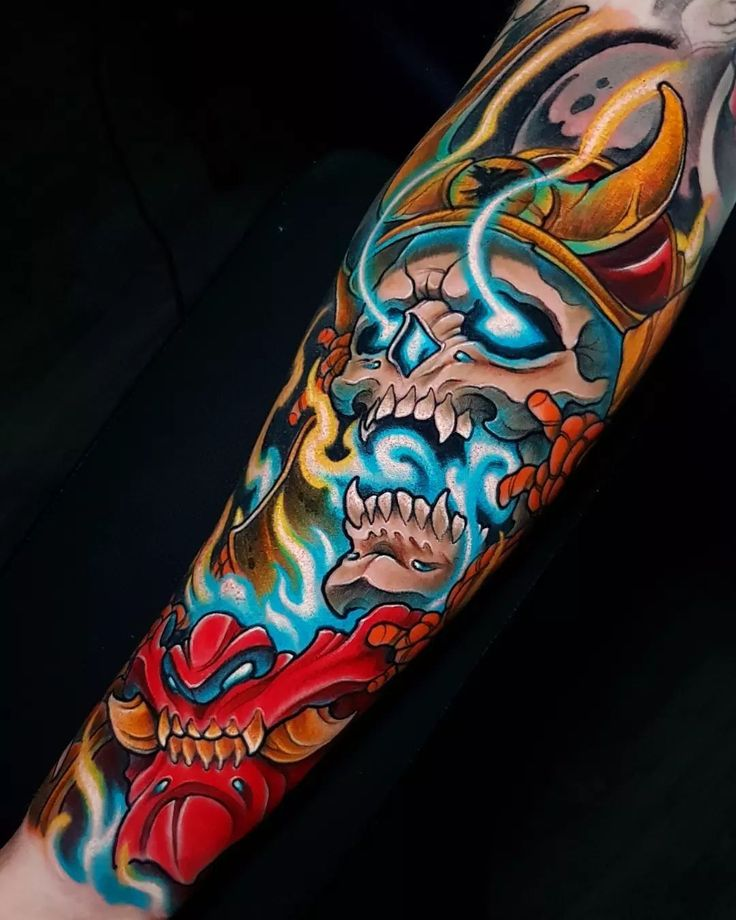
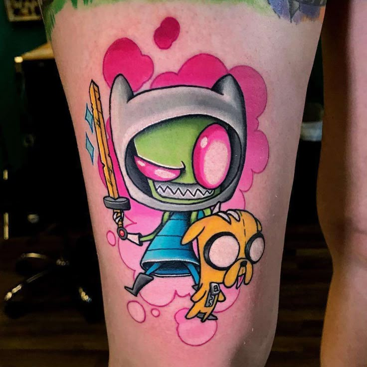

 Tradicional
El estilo tradicional en el tatuaje, también conocido como Old School, es un estilo clásico que surgió a finales del siglo XIX y se popularizó a mediados del siglo XX, especialmente entre marineros, soldados y motociclistas.
Características principales:
Líneas negras gruesas: delimitan y dan estructura firme al diseño.
Colores sólidos y vibrantes: como rojo, verde, amarillo y azul, sin degradados.
Sombra mínima o nula: se enfoca más en el contorno que en el realismo.
Diseños icónicos y simbólicos: anclas, corazones, rosas, calaveras, golondrinas, dagas, pin-ups, banderas, entre otros.
Significado fuerte: suelen representar lealtad, amor, valentía, patriotismo o recuerdos personales.
 Japonés
El estilo japonés se caracteriza por:
Diseños grandes y narrativos, que suelen cubrir grandes áreas del cuerpo (espalda, brazos, pecho, piernas) con composiciones que cuentan una historia visual.
Temática mitológica y natural, con elementos tradicionales como:
Dragones, koi (carpas), tigre, fénix – simbolizan fuerza, valentía o transformación.
Samuráis, geishas, oni (demonios) – representan valores como el honor, la lucha o el equilibrio entre el bien y el mal.
Flores como peonías, crisantemos y flores de cerezo – añaden significado estacional y estético.
Contornos gruesos y colores planos con sombreado suave, generando contraste visual y durabilidad con el tiempo.
Fondo tradicional, como olas, viento, nubes o llamas, que unifican la composición del tatuaje.
 Black and Gray
Black and Gray
el Black and Gray es un estilo artístico que se caracteriza por el uso exclusivo de tinta negra, aplicada en diferentes grados de dilución para crear sombras, profundidad y contrastes sin utilizar colores.
Características principales del Black and Gray:
Tinta negra diluida: Se mezcla con agua destilada u otros diluyentes para obtener una gama de tonos grises, desde el negro sólido hasta grises muy claros.
Sombras suaves: Permite lograr un efecto más realista y tridimensional, ideal para retratos, escenas religiosas, iconografía chicana, animales, paisajes y más.
Estética monocromática: Al no usar colores, se enfoca en el contraste de luces y sombras para generar emoción y detalle visual.
Durabilidad: Los tatuajes en Black and Gray tienden a envejecer mejor que los de color, ya que el negro resiste más el paso del tiempo en la piel.
 Lettering
El estilo "lettering" en el tatuaje se refiere a un tipo de tatuaje centrado en letras, palabras o frases, con un diseño tipográfico cuidado y artístico. No se trata solo de escribir un texto, sino de darle personalidad, emoción y estilo visual mediante la forma en que se dibujan las letras.
Características clave del estilo lettering en tatuajes:
Tipografías personalizadas: Puede usar estilos como cursiva, gótica, caligráfica, manuscrita, serif o sans serif.
Diseño artístico: Las letras pueden tener sombras, ornamentos, curvas o efectos decorativos que aportan expresividad.
Mensajes significativos: Suelen usarse para frases motivacionales, nombres, citas, fechas importantes o palabras con carga emocional.
Precisión: Requiere gran habilidad técnica para que las letras sean legibles y estéticamente armoniosas.
 Blackwork
El estilo Blackwork en el tatuaje es una técnica que se caracteriza por el uso exclusivo del tinta negra sólida, sin color ni sombreado a color. Se basa en grandes áreas de negro, líneas gruesas, patrones geométricos, mandalas, simbología o diseños tribales, creando tatuajes de fuerte contraste y alto impacto visual.
Características clave del estilo Blackwork:
Uso exclusivo de tinta negra: Sin mezclas de color; el enfoque está en el contraste entre tinta y piel.
Diseños sólidos y atrevidos: Puede incluir patrones repetitivos, figuras abstractas, símbolos o ilustraciones detalladas.
Influencias diversas: Toma inspiración de estilos antiguos como el tribal, el arte sacro, grabados medievales o incluso el arte moderno.
Versatilidad estética: Va desde composiciones simples hasta piezas complejas que cubren grandes zonas del cuerpo.
 Neo Tradicional
Neo Tradicional
El estilo neo tradicional en el tatuaje es una evolución del estilo tradicional (o "old school"), combinando sus bases clásicas con técnicas y detalles modernos. Se caracteriza por lo siguiente:
Líneas definidas y sólidas, como en el estilo tradicional.
Paleta de colores más amplia y rica, incluyendo degradados y sombreados suaves.
Mayor nivel de detalle y realismo, especialmente en rostros, animales, flores y elementos decorativos.
Elementos ornamentales como marcos, perlas, filigranas o motivos art nouveau.
Influencia artística variada, incluyendo el arte clásico, el modernismo y el surrealismo.
 Full Color
El estilo full color en el tatuaje se refiere a aquellos diseños que utilizan una amplia gama de colores intensos y saturados, cubriendo la mayor parte del diseño sin dejar zonas sin tinta o con piel visible. No es un estilo artístico específico, sino una forma de aplicación del color que puede estar presente en diferentes estilos (como new school, neo tradicional, realismo, entre otros).
Características principales:
Uso de múltiples colores vivos y brillantes, a menudo en combinaciones llamativas.
Cobertura completa del área tatuada, con poco o ningún espacio negativo.
Degradados y transiciones suaves entre tonos para dar profundidad y volumen.
Enfoque visual fuerte, diseñado para destacar a simple vista.
 New school
El estilo New School en el tatuaje es un estilo moderno y llamativo que se originó en los años 80 y 90, y se caracteriza por su estética caricaturesca y exagerada. Sus principales características son:
Colores vibrantes y saturados, con alto contraste.
Líneas gruesas y definidas, similares al estilo tradicional, pero con mayor dinamismo.
Diseños exagerados y caricaturescos, a menudo con proporciones distorsionadas.
Temáticas creativas y poco convencionales, como personajes de fantasía, dibujos animados, animales antropomorfos o figuras pop.
Sombras y degradados intensos, que dan profundidad y volumen al diseño.